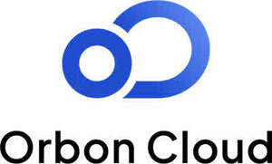

Trade Mark Journal No.2025/046 14 November 2025
UK00004289908 5 November 2025 (9,35,36,41,42)
Mark 1
Mark 2

- Class 9
- Software; computer software and computer programmes; downloadable software; platform software; software and applications for mobile devices; computer application software; computer software for processing; utility and security software; cryptography software; software for digital distributed storage; game and gaming software; virtual reality games software; virtual reality software; artificial intelligence software; machine learning artificial intelligence software; computer software for blockchain technology; computer software for managing cryptocurrency transactions using blockchain technology; software facilitating the use of blockchain; software facilitating the use of cryptocurrency on an online network; software for use in the creation of digital goods including crypto collectibles, digital collectibles, digital art, block-chain based assets, digital assets, media content, non-fungible tokens (NFTs) and other application tokens; downloadable cryptographic keys for receiving and spending cryptocurrency; downloadable cryptographic keys for receiving and spending crypto and digital assets; artificial intelligence software; interactive software based on artificial intelligence; digital collectibles; digital assets; downloadable digital media; downloadable video, music and image files; downloadable electronic publications; downloadable computer graphics; non-fungible tokens (NFTs); non-fungible tokens and other application tokens; data storage programmes; non-fungible tokens (NFTs); non-fungible tokens and other application tokens; databases; media content; media content in relation to electronic sports; computers; digital recording media; recording discs; compact discs; DVDs; information technology and audio visual equipment; apparatus for recording, transmission or reproduction of sound or images.
- Class 35
- Provision and operation of an online marketplace for sellers and buyers of goods and services; provision and operation of an online marketplace for buyers and sellers of digital goods; provision and operation of an online marketplace for buyers and sellers of non-fungible tokens; provision and operation of an online marketplace for buyers and sellers of digital goods including crypto collectibles, digital collectibles, digital art, block-chain based assets, digital assets, media content, non-fungible tokens (NFTs) and other application tokens; provision and operation of an operation of an online marketplace for creation, posting, minting, promoting, displaying, registering, purchasing, selling, trading, listing, transferring and exchange of digital goods including crypto collectibles, digital collectibles, digital art, block-chain based assets, digital assets, media content, non-fungible tokens (NFTs) and other application tokens; promoting, displaying, registering, purchasing, selling, trading, listing, transferring and exchange of digital goods including crypto collectibles, digital collectibles, digital art, block-chain based assets, digital assets, media content, non-fungible tokens (NFTs) and other application tokens via a blockchain network; administration of loyalty rewards programmes; advertising services; marketing services; promotional services; advertising and marketing services in relation to digital goods including crypto collectibles, digital collectibles, digital art, block-chain based assets, digital assets, media content, non-fungible tokens (NFTs) and other application tokens; providing a searchable online advertising guide featuring the goods and services of others specifically digital assets and collectibles; advertising, marketing, and promotional services related to esports; advertising, marketing, and promotional services in relation to esports competitions and events; promotional and business management of sports personalities, in particular in relation to esports; agency services for promotion sports personalities; computer data processing; computerised processing of dormant computer processing power.
- Class 36
- Financial services; financial services, namely, providing a decentralized and open source crypto-currency on a global computer network utilizing a blockchain; electronic transfer of crypto assets; electronic, digital, virtual, and crypto currency payment services; payment processing services; e-wallet payment services; financial exchange of crypto assets; currency trading and exchange; trading and exchange of electronic assets, digital assets, virtual assets, and cryptocurrency; financial sponsorship; financial sponsorship of esports events and activities; financial sponsorship of esports personalities.
- Class 41
- Entertainment services; entertainment services relating to esports; sporting and cultural activities; esports entertainment; esports services; online gaming services; providing online non-downloadable video content; providing esports facilities; provision, production, and organisation of esports events and activities; conducting of live esports events; entertainment services in the nature of professional athletes competing in video game competitions and tournaments; providing news and information relating to electronic games, video gaming, and e-sports; gaming services; online gaming services; virtual reality game services provided online from a computer network; esports coaching; sports officiating; production of esports events; education services; provision of training; education services relating to the professional video gaming industry; sports coaching; coaching of esports; video production services; ticketing and event booking services; ticket information services.
- Class 42
- Computer consulting services; computer software consulting; design, development, implementation, and maintenance of software; design, development, implementation, and maintenance of open source software for use by members of an online community via a global computer network; design, development, implementation, and maintenance of software in relation to blockchain technology; provision of plugins and in-game technologies; provision of distributed supply of processing power; blockchain as a service (BaaS); data storage via blockchain; data authentication via blockchain; user authentication services via blockchain; cryptocurrency mining; blockchain mining; data mining; SaaS for the exchange of cryptocurrency; computer consulting services; platform as a service (PaaS); platform as a service (PaaS) for selling, buying, trading, and storing digital currency and cryptoassets; hosting platforms on the internet; hosting distributed computing platforms; software as a service (SaaS); software as a service (SaaS) featuring computer software platforms for artificial intelligence; software as a service (SaaS) featuring software platforms for electronic gaming; software as a service (SaaS) featuring software for providing access to crypto-collectibles, managing digital and virtual currency, managing digital assets, managing NFTs, and managing digital wallets; services featuring software for clearing, allocation, compliance, recordation and settlement of trading related to cryptocurrency; facilitating the development, maintenance and distribution of open source software in support of decentralized crypto currencies utilizing a blockchain; research and development of computer software; research and development in relation to technology, cryptography, cryptocurrencies, blockchains, and non-fungible tokens (NFTs); hosting online web facilities for others for managing and sharing online content; providing a web site containing information in the fields of open source computer software development, computers, computing, computer software, technology and media; providing a web site containing information in the fields of electronic games, video gaming, and e-sports; providing a web site containing information in the fields of crypto collectibles, digital collectibles, digital art, block-chain based assets, digital assets, media content, non-fungible tokens (NFTs) and other application tokens; blockchain validation services; software as a services (SaaS) for use in the creation of crypto collectibles, digital collectibles, digital art, block-chain based assets, digital assets, media content, non-fungible tokens (NFTs) and other application tokens.
Gaimin LDA
Representative: Marks & Clerk LLP